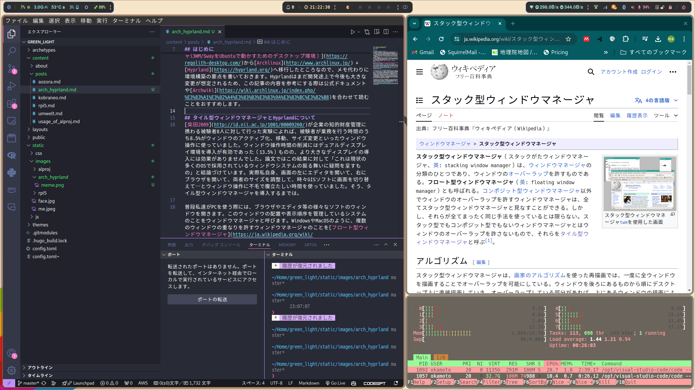

タイル型ウィンドウマネージャ（Hyprland）のすゝめ
はじめに

I use arch, btw…
https://www.reddit.com/r/linuxmemes/comments/9xgfxq/why_i_use_arch_btw/
5年前に大学の研究室に入った際、指導教員から「ウチはWindows禁止だから」という衝撃的な宣告を受けました。セキュリティに穴があるからWindows PCはラボのネットワークにつないではいけないというのです。かと言って今更Macを買うお金も無いし、どうしようと思った矢先に、指導教員の「普段使いのガジェットをLinuxにすれば、自ずとLinuxが使えるようになる」という言葉を思い出しました。当時使っていたノートPCがWindows10非対応の古いマシンだったことも相まって、大学4年生の自分はLinuxへの全面移行を決意しました。
いざ使い始めてみると、WindowsやOSXと違ってオープンで多様なディストリビューションやデスクトップ環境が存在するLinuxは、飽きっぽい自分の性分に大変合っており、半年に1回くらいの頻度で様々なディストリビューションを点々とする生活を送っています。
（Mint -> Ubuntu -> Manjaro -> Arch -> OpenSUSE -> Endeavour -> Regolith -> Arch）
最近、1年近く使っていたRegolith Linux（タイル型ウィンドウマネージャi3WM/SwayをUbuntuで動かすためのデスクトップ環境）からArchlinux + Hyprlandへ移行したところなので、メモ代わりに環境構築の要点を書いておきます。Hyprlandはまだ開発途上で今後も大きな変更が想定されるため、この記事の内容を参考にする際は公式ドキュメントやArchwikiを合わせて読むことをおすすめします。
タイル型ウィンドウマネージャとHyprlandについて
柴田 2009が企業の知的財産管理に携わる被験者8人に対して行った実験によれば、被験者がPCを操作する時間のうち実に8.5%(!)がウィンドウのアクティブ化、移動、サイズ変更といったウィンドウ操作に使われていました。ウィンドウ操作時間の削減にはデュアルディスプレイ環境の導入が有効であった（13.5%削減）ものの、より大きなディスプレイの導入には効果がありませんでした。論文ではこの結果に対して「現状の多くのOSで採用されているウィンドウシステムの振る舞いに疑問を呈すもの」だと結論づけています。これは私の体感とも合致するもので、実際私自身、画面の左にエディタを開いて、右にブラウザを開いて、両者のサイズを調整して、時々GISソフトに画面を切り替えて…とウィンドウ操作に不毛で腹立たしい時間を使っていました。そう、タイル型ウィンドウマネージャを導入するまでは…
普段私達がPCを使う際には、ブラウザやファイルマネージャやエディタ、チャットアプリ等の様々なウィンドウを開きます。このウィンドウの配置や表示順序を管理しているシステムのことをウィンドウマネージャと呼びます。WindowsやMacOSのように、複数のウィンドウの重なりを許すウィンドウマネージャのことをフロート型ウィンドウマネージャと呼びます。これに対し、下のスクリーンショットのように、各ウィンドウを互いに重ならないようにに配置して表示するものをタイル型ウィンドウマネージャと呼びます。タイル型ウィンドウマネージャでは（WindowsやMacOSにもありますが）ワークスペースと呼ばれる仮想デスクトップが複数用意されていて、ワークスペース①にはブラウザとエディタを、②にはファイルマネージャと画像プレビューアを…というふうに使い分けるのが普通です。 
タイル型ウィンドウマネージャの最大のメリットは、各ウィンドウが画面内にきっちり隙間なく埋まった状態を簡単に作れ、ウィンドウサイズの変更やウィンドウの移動、アクティブ化をキーボード操作で素早く行えることにあります。
Linuxで動くタイル型ウィンドウマネージャにはXorgで動くi3やWaylandで動くSwayなど種々あります（私が初めてインストールしたのはi3でした）が、今回は軽量かつアニメーションが楽しいHyprlandを導入しました。 Hyprlandの動作イメージは下の動画のような感じです。
Archlinux + Hyprlandの環境構築メモ
Hyprlandは2022年にベータ版の初リリースが行われたばかりの極めて新しいソフトウェアであり、関連ソフトも含めて良くサポートされているのは2024年5月現在でArch, NixOS, openSUSE Tumbleweedだけです。他のディストリビューションでもコミュニティベースでの導入が進みつつはありますが、公式でサポートされた上記の（あまり親切ではない）ディストリビューションを選ぶのが無難です。今回はArchlinuxを使います。
Arch Linuxのインストール
Arch LinuxはKeep It Simple を標榜する、軽量で柔軟性に優れた Linux® ディストリビューションであり、最小限の基本システムの状態でインストールされ、ユーザー自身が、ユーザーの理想とする環境のために必要なものだけをインストールして構築することができるのが特徴です。つまり、必要なソフトは自分で探して入れる必要があります。これは大変なことですが、Arch LinuxにはArchWikiというまれに見る高品質なドキュメントがあるため、ゴミみたいなSta**Overflowを何時間も見なくて済みます トラブルを通じて普段使っているLinuxシステムについて、より詳しく学ぶことが可能です。
Arch Linuxのインストールは最近まで、すべてコマンドを打ち込んで行うしんどいものでしたが、気がついたらarchinstallの導入でかなり簡単になりました。 archinstallでの設定方法についてはこのブログやこのブログを参考にしました。Profile -> DesktopからHyprlandを選択するとHyprlandがデフォルトでインストールされますが、ここではとりあえずKDE等メジャーなデスクトップ環境を保険にインストールしておくのも良いかもしれません。ちなみに、xdg-desktop-potal-hyprlandをインストールする際にpipewireが必要になるため、Audioはpipewireを選択しておくのが無難です。
Hyprlandの設定
Hyprlandの設定は ~/.config/hypr/hyprland.conf に書き込む形で行います。
書き方は公式ドキュメントに詳しく書かれています。
例として特定のソフトを起動するショートカットを追加する場合には、bind = $mainMod, E, exec, $fileManager という行を追加します。
Hyplandではディスプレイやキーボードといった機器周辺の設定もこのコンフィグファイルで行います。
接続しているディスプレイの名称はhyprctl monitors allで、マウスやキーボードの名称はhyptctl devicesでリストアップできます。最後の行では、Win + K でキーボードレイアウトの読み込みを行う設定にしています。
# Monitor settings
## Laptop display
monitor=eDP-1, 1920x1080, 0x0, 1
## External display
monitor=HDMI-A-1, 2400x1350, 0x-1350, 1
# monitor=HDMI-A-1, 1920x1080, 0x-1080, 1
# For all categories, see https://wiki.hyprland.org/Configuring/Variables/
input {
kb_layout = jp, us
kb_variant =
kb_model =
kb_options =
kb_rules =
follow_mouse = 2
touchpad {
natural_scroll = yes
}
sensitivity = 0 # -1.0 to 1.0, 0 means no modification.
}
exec-once = hyprctl switchxkblayout at-translated-set-2-keyboard 0 # jp
exec-once = hyprctl switchxkblayout compx-flow84@lofree 1 # us
bind = $mainMod, K, exec, hyprctl switchxkblayout hyprctl switchxkblayout flow84@lofree 1
あると便利なソフト
Must haveなソフトや、Hyprland 関連ソフトについては公式Wikiに詳しい情報があるのでこちらを参照してください。また、日本語入力の設定等、他のデスクトップ環境でも共通して必要な作業については省略します。
waybar
waybarはwayland環境で使えるバー型のウィジェットで、コンフィグファイルで高度にカスタマイズできます。 自分は https://github.com/JaKooLit/Hyprland-Dots/tree/main/config/waybar を参考に作りました。
トラブルシューティング
Chromiumベースのソフト（Chromium, VSCode, Discord…）で日本語入力がおかしい
WaylandネイティブでChromiumベースのソフトを動かした場合、日本語入力がうまくできません。
これは、ChromiumがWaylandのtext-input-v3に対応していないことが問題です。Geckoをレンダリングエンジンに使っているブラウザ(Firefox等)はtext-input-v3に対応しているので、こちらを使いましょう。また、VSCodeはZed等への移行を考えてもいいかもしれません。Discrod等、Electronで作られているデスクトップソフトを使う場合には、以下のようにしてオプションを与えてあげると（一応）日本語入力ができるようになります。ただ、入力途中でバックスペースを押すと文字入力ができなくなる、等の問題が、まだあります。
# Win + D でDiscordを起動する
bind = $mainMod, D, exec, discord --enable-features=UseOzonePlatform --ozone-platform=wayland --enable-wayland-ime
音が出ない/オーディオがダミーと内部オーディオを行ったり来たりする
Linuxのサウンドサーバーには長らくPulseAudioが使われてきましたが、近年ではPipewireに代替されつつあります。HyprlandではPipewireの利用が推奨されているため、こちらをつかいましょう。なにかの手違いでPipewireとPulseAudioが同居するとこういったトラブルが起きやすいので、音声関連のトラブルが生じた場合は、音声周りのソフトをすべてアンインストールし、pipewireとwireplumberを再度インストールすると解決することがあります。